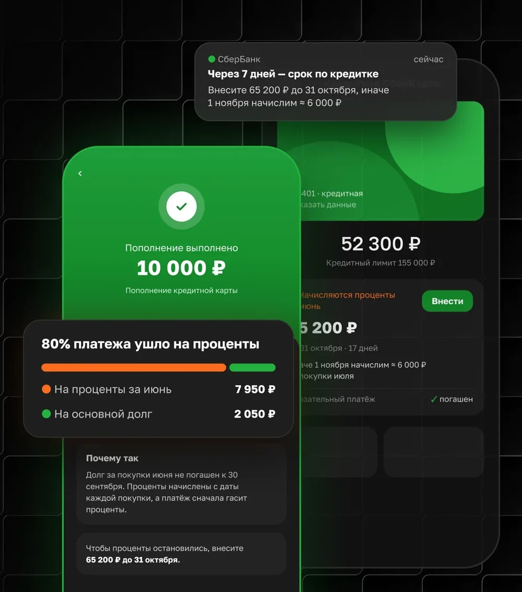
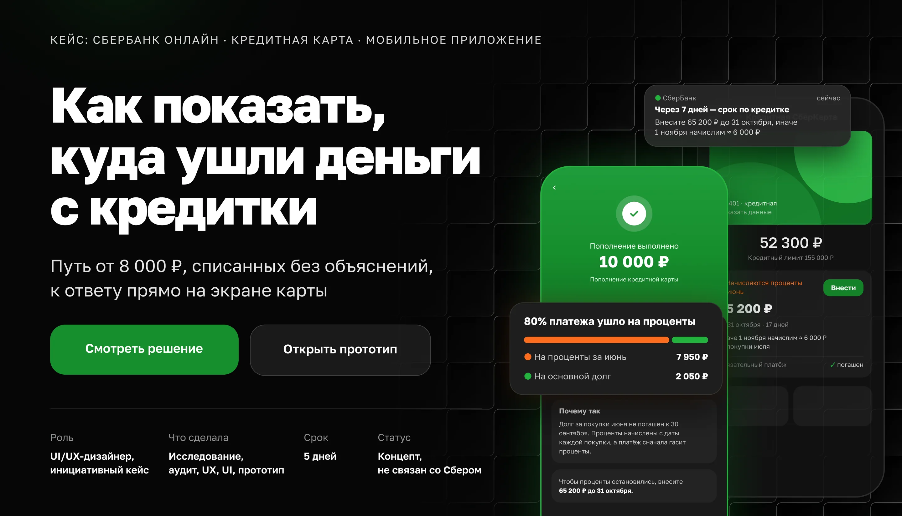
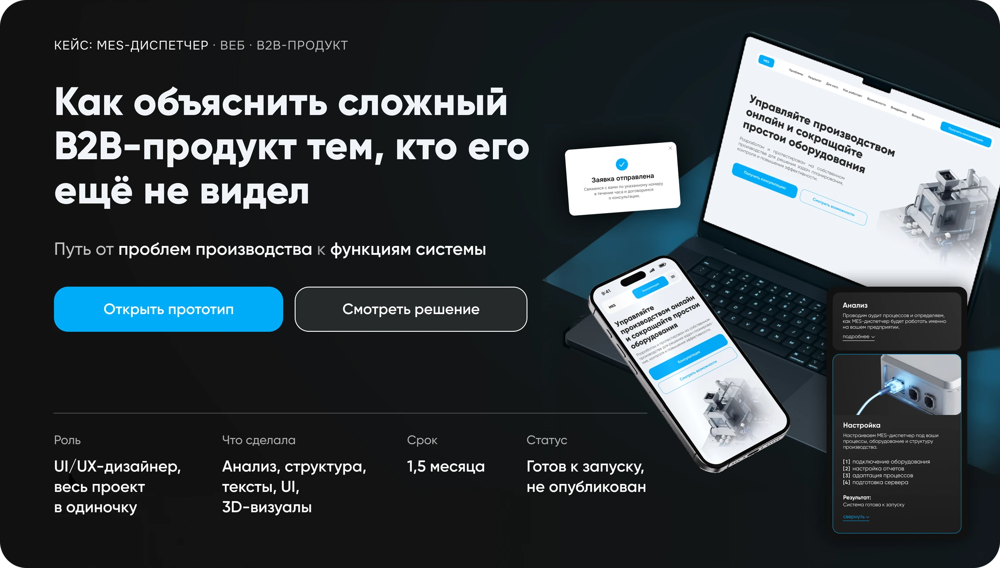
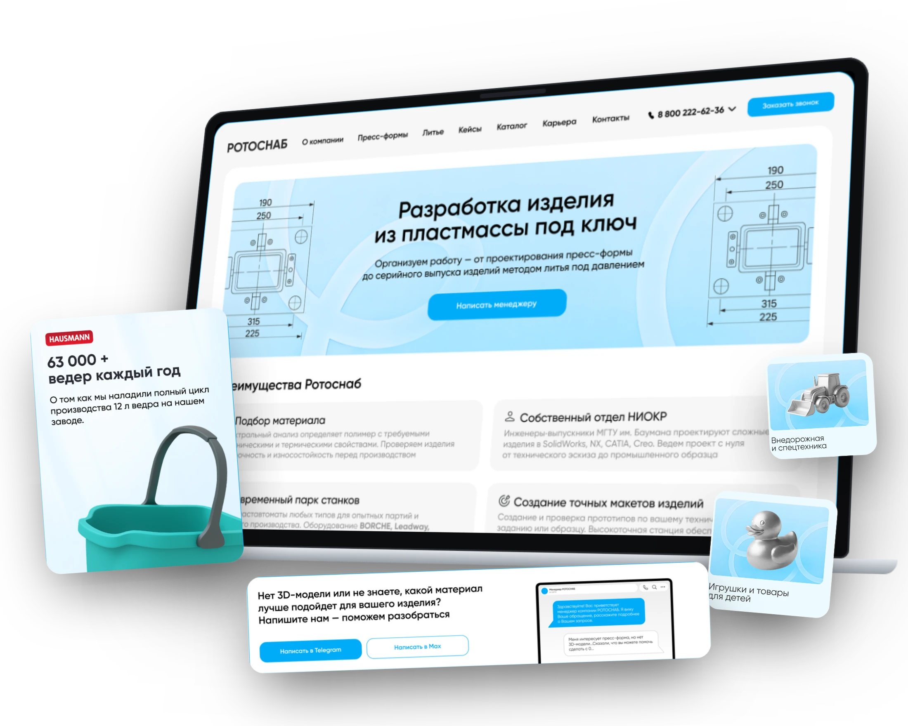

Лада Белык · UI/UX-дизайнер · B2B и цифровые сервисы
Ищу в интерфейсах места, где человек спотыкается — и убираю их
Это началось с наблюдения: менеджеры каждый день отвечали клиентам на одни и те же вопросы. Я перенесла ответы в интерфейс — и с тех пор так работаю.
UX-логика // UI // Мобильные и веб-интерфейсы
-
Начинаю с вопросов людей
Собираю, что пользователи спрашивают и где теряются, и строю структуру из этих ответов, а не из списка разделов.
Ротоснаб: сайт из вопросов клиентов
-
Иду от проблемы к функции
Сначала разбираю, что болит у пользователя, потом показываю функцию, которая это решает. Согласовываю позиции заказчиков.
MES-диспетчер: проблема → функция
-
Довожу до состояний
Проектирую не только «идеальный» экран, но и ошибки, пустые и нестандартные ситуации — то, на чём спотыкаются чаще всего.
Сбер: шесть состояний слота платежа
- Figma
- Tilda
- Illustrator
- Photoshop
- After Effects
- ChatGPT
- Claude
- Gemini
- Syntx AI
- Recraft
Избранные проекты
Кейсы по проектированию интерфейсов и цифровых продуктов — от структуры до финального UI.

Мобильное приложение · финтех
СберБанк Онлайн
Как показать, куда ушли деньги с кредитки
Концепт
Смотреть кейс

Веб · B2B-продукт
MES-диспетчер
Как объяснить сложный B2B-продукт тем, кто его ещё не видел
Готов к запуску
Смотреть кейс

Веб · B2B-сайт
Ротоснаб
Сайт, который отвечает клиенту раньше менеджера
Запущен
Смотреть кейсКейс: Ротоснаб · веб · B2B-сайт
Сайт, который отвечает клиенту раньше менеджера
Путь от вопросов клиентов к структуре и интерфейсу сайта
Контакты:
тел: +7 (925) 134 80 41
telegram: @oladyshekb